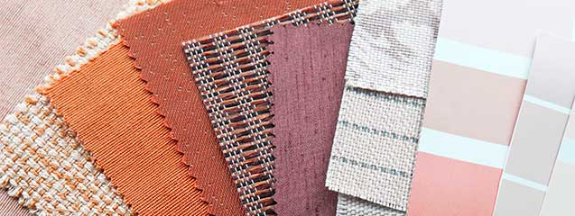
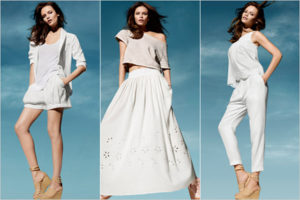

La importancia de los materiales textiles en la moda
La materia con la que se trabaje para elaborar un diseño de moda es fundamental. De ella dependerá el acabado, la apariencia y cómo quede en el cuerpo. En la actualidad se apuesta por la moda sostenible y respetuosa con el medio ambiente y las personas que forman parte de la cadena de producción.
Los usuarios están demandando un consumo responsable y prendas que respeten estos códigos. Por ello esta tan en boga la moda ecológica o eco moda, que se basa en la confección de ropa orgánica: telas libres de químicos, que no contaminen el agua, ni el aire, que protejan el suelo, reduzcan residuos, ahorren energía y prevengan el calentamiento global. Los materiales orgánicos que se usan están libres de pesticidas y fertilizantes. El algodón es el material más conocido, pero también existen prendas de ortiga y de bambú.
Esta tendencia más respetuosa con la moda apareció en los años 80. Y hoy día son muchísimas marcas y diseñadores que se apuntan a la moda ecológica. Mango, Camper, Zara, Adidas, Nike, Giorgio Armani, Dolce & Gavanna o Stella Mcartney están fabricando prendas de vestir más respetuosas con el planeta en el que vivimos. Incluso hay marcas que hacen de la moda ecológica su seño distintivo y realizan prendas o accesorios en cáñamo o de algún material natural sin tratamiento. Otros materiales utilizados son las algas para fabricar pantalones, cajas de huevo para los trajes y fibra de soja para hacer mantas.
La ropa ecológica o moda eco están certificados con unos sellos o ecoetiquetas que mostramos a continuación:
GOTS (GLOBAL ORGANIC TEXTIL STANDARD) una de las certificaciones más estrictas. Está compuesta de cuatro reconocidas organizaciones miembro: OTA (EE.UU.), IVN (Alemania), Soil Association (Reino Unido) y JOCA (Japón). Para otorgar el sello tienen en cuenta el procesamiento, fabricación, envasado, etiquetado, exportación, importación y distribución de tejidos ecológicos fabricados con al menos un 70% de fibras naturales orgánicas certificadas que obtienen la etiqueta “hecho con orgánico”. Para que el producto esté marcado como “orgánico” el 95% de las fibras han de ser certificadas.
Se controlan además las sustancias añadidas a las fibras, así como los accesorios utilizados. En cuanto a la dimensión social, todos los fabricantes deben cumplir con las normas fundamentales de la Organización Internacional del Trabajo.
ECOETIQUETA EUROPEA (European Ecolabel) Esta etiqueta se concede a los productos que garanticen un alto nivel de protección mediambiental en diversos ámbitos, entre ellos el textil. Los criterios son los mismos para todos los países miembros de la unión Europea.
La ecoetiqueta en los diseños textiles hace referencia a que tiene limitado el uso de sustancias perjudiciales para el medioambiente y para la salud, contaminación reducida del agua, y que no contienen metales pesados ni tintes tóxicos, entre otros requisitos.
OEKO-TEX® Este sello está desarrollado por 15 Institutos de Investigación Textil europeos y japoneses , que conforman la “International Oeko-Tex Association. . Se ocupa de excluir o regular de forma estricta el uso de posibles sustancias nocivas en productos textiles. Limita el uso de sustancias nocivas, ya prohibidas y también las no prohibidas como pesticidas, colorantes alergénicos o metales pesados. En España es AITEX el Instituto asociado.
NATURTEXTIL Otorgado por la International Association of Natural Textile Industry, asociación de origen alemán que desde su fundación en 1989 tiene como objetivo definir y establecer criterios de análisis de la responsabilidad ecológica y social en los procesos de producción textil, así como altos estándares de calidad en el producto terminado.
Con el Curso de Materias Primas y Materiales Textiles puedes conocer en profundidad todos los conceptos relacionados con el proceso de creación de los tejidos, desde su procedencia hasta los distintos acabados. Para que puedas orientar tu carrera profesional hacia el mundo de la tecnología textil, especializándote y aprendiendo todo sobre los materiales que se utilizan actualmente, las diferentes técnicas y características de los tejidos y otros materiales, así como sus diferentes acabados y posibles utilidades.
Además, conocerás cómo se relacionan las fibras textiles con la industria de la hilatura, la tejeduría y los distintos acabados que son necesarios y opcionales en las materias textiles, así como las características propias de cada proceso. Con todo este conocimiento podrás trabajar en estudios de diseño de moda como patronista y confeccionista.
El conocimiento de las posibilidades que ofrecen los diferentes materiales te hace un profesional más capacitado para abordar multitud de puestos de trabajo y ofrezcas el mayor provecho a cada uno de ellos, aportando soluciones de calidad y rentabilidad.